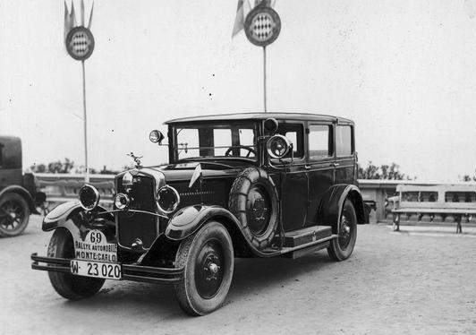
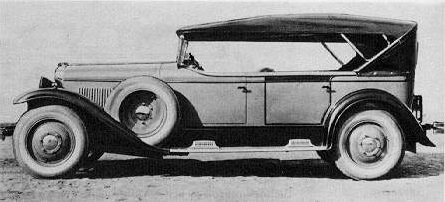
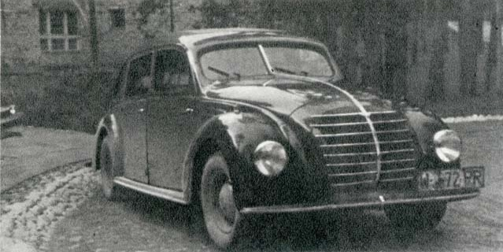
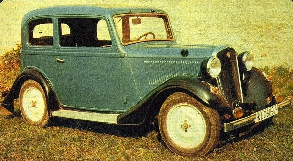

Ralf Stetysz | CWS T-1 | Lux Sport | Fiat 508
Ralf-Stetysz
 Ralf-Stetysz jest polskim samochodem osobowym, który produkowany był w Rolniczej Automobilowo-Lotniczej Fabryce Stefana Tyszkiewicza. Początkowo produkcja samochodu miała miejsce na terenie Francji. W późniejszym okresie powstał zakład na terenie Polski w Warszawie przy ulicy Fabrycznej 3. Samochód można było zamówić w wersji kabriolet albo kareta. Model TA oferowany był z silnikiem 4-cylindrowym Continental o pojemności 1500 cm3, zaś model model TC six, z silnikiem 6-cylindrowym Continental o pojemności 2760 cm3.Samochód produkowany był w latach 1924-1929. Jest jednym z pojazdów, który dostosowany do polskich warunków drogowych przez odpowiednio dopasowane podwozie oraz możliwość blokowania mechanizmu różnicowego. Auto eksponowane było także na wystawach motoryzacyjnych. Prawdopodobnie, gdyby nie wybuch pożaru w fabryce w 1929 roku, samochód produkowany byłby w kolejnych latach.
CWS T-1
 CWS T-1 był polskim samochodem osobowym produkowanym w latach 1927-1931. Skonstruowany został w Centralnych Warsztatach Samochodowych w Warszawie, pod przewodnictwem inż. Tadeusza Tańskiego. Konstrukcja samochodu była bardzo prosta. Niezwykłą i niespotykaną cechą pojazdu była możliwość rozkręcenia całego pojazdu, a następnie ponowne skręcenie przy pomocy jednego klucza szczękowego. Zawieszenie przednie jak i tylne opierało się na resorach piórowych wyposażonych w amortyzatory cierne. Napęd przekazywany był za pośrednictwem suchego jednotarczowego sprzęgła do skrzyni biegów blokowanej za pośrednictwem zamka Yale przed kradzieżą. Układ hamulcowy działał na cztery koła wyposażone w hamulce bębnowe o dużej średnicy. W sumie powstało około 800 aut tego typu, w tym około 500 osobowych oraz około 300 aut zmodyfikowanych, używanych np. jako sanitarka, ambulans pocztowy czy CWS T-1 ciężarowy.
Lux-Sport
 PZInż 403, Lux Sport (L-S), którego prototyp zbudowano w 1935 roku jest jednym z ciekawszych polskich projektów lat międzywojennnych. Samochód stworzono w Państwowych Zakładach Inżynierii pod przewodnictwem inż. Zygmunta Okołówka. Pojazd wyposażony był w wiele innowacyjnych rozwiązań. W samochodzie zastosowano możliwość regulacji prześwitu oraz charakterystyki resorowania kół na drążkach skrętnych także podczas jazdy oraz metalowo-gumowe tuleje w układzie kierowniczym, które rozwiązało problem konieczności smarowania. Auto napędzane było za pomocą nowoczesnej jednostki V8 o pojemności 3888 cm3. Samochód jak na owe czasy charakteryzował się bardzo opływowym kształtem nadwozia. Wprowadzenie konstrukcji do produkcji było niemożliwe przez umowy licencyjne zawarte z koncernem FIAT, zaś kiedy podjęto decyzję o produkcji niestety niedługo później wybuchła II Wojna Światowa.
Fiat 508
 Fiat 508 był niezbyt dużym samochodem osobowym włoskiego koncernu FIAT. W Polsce produkowany był na licencji w Państwowych zakładach Inżynierii od 1935 do 1939 roku. Współpraca z koncernem FIAT przyczyniła się do wprowadzenia seryjnej produkcji pojazdów na terenie Polski, lecz jednocześnie spowodowało zahamowanie rozwoju polskiej motoryzacji. Fiat 508 był małym, dwudrzwiowym autem, z nadwoziami typu Berlina, Torpedo i Spider. Jego niewątpliwą zaletą była niska cena, zaś wadą nieco przestarzała już w tamtym czasie konstrukcja pojazdu. Wyposażony był w silnik o pojemności 995 cm3 o mocy 20 KM. Było to najbardziej popularne auto osobowe na polskich drogach lat trzydziestych XX wieku.
Dane techniczno-eksploatacyjne modelu Fiat 508 III Junak:
- Silnik: czterocylindrowy, czterosuwowy z zapłonem iskrowym, chłodzony cieczą.
- Pojemność skokowa: 995 cm3
- Moc maksymalna 24 KM przy 3600 obr./min.
- Sprzęgło: cierne, jednotarczowe, sterowane nożnie
- Skrzynia biegów: o czterech przełożeniach z biegiem wstecznym, biegi 3 i 4 synchronizowane, dźwignia sterowania umieszczona w podłodze.
- Hamulce: zasadniczy - hydrauliczny, bębnowy, na wszystkie cztery koła, sterowany nożnie, pomocniczy - mechaniczny, na wał napędowy, sterowany dźwignią umieszczoną obok fotela kierowcy.
- Zawieszenie przednie: oś sztywna, wzdłużne resory piórowe, amortyzatory hydrauliczne, ramieniowe.
- Zawieszenie tylne: sztywny most napędowy, wzdłużne resory piórowe, amortyzatory hydrauliczne, ramieniowe.
- Nadwozie: oparte na ramie nośnej, typu sedan, zamknięte, czteromiejscowe, 4-o drzwiowe, metalowe na szkielecie drewnianym.
- Masa własna: 760 kg
- Prędkość maksymalna: 95 km/h
- Zużycie paliwa: 8 l/100 km
- Zużycie oleju: 150 gramów / 100 km